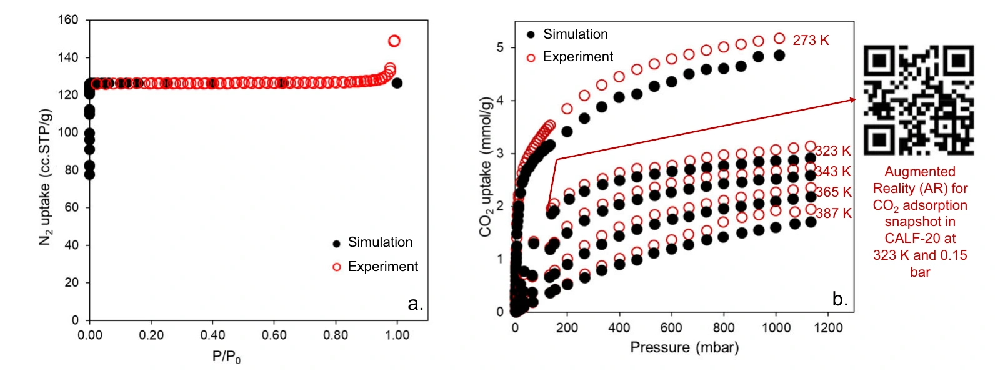
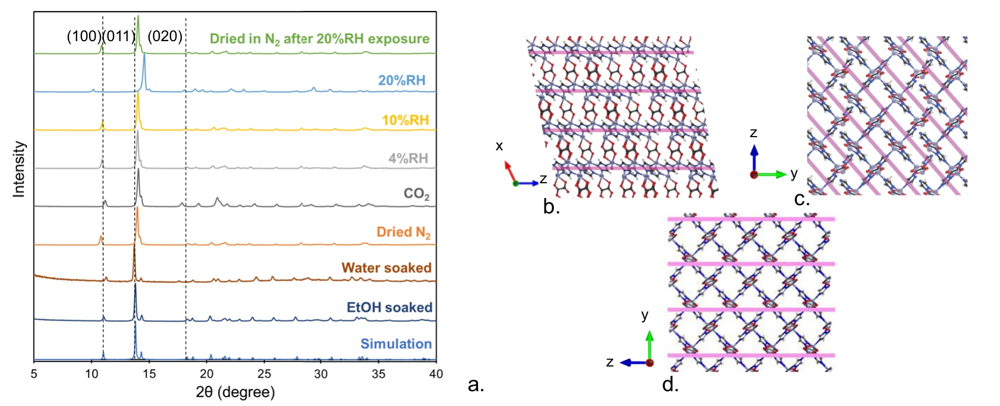
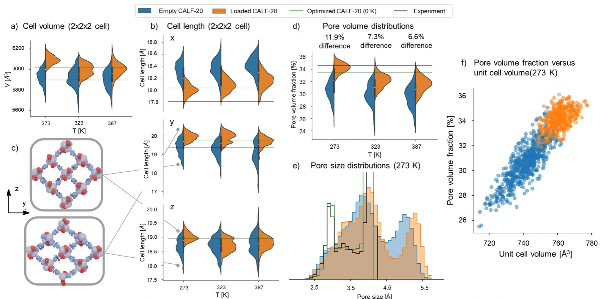
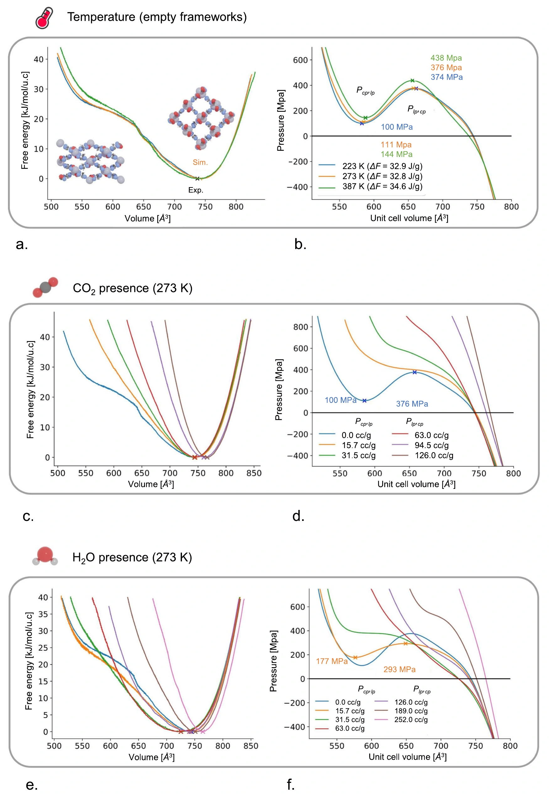
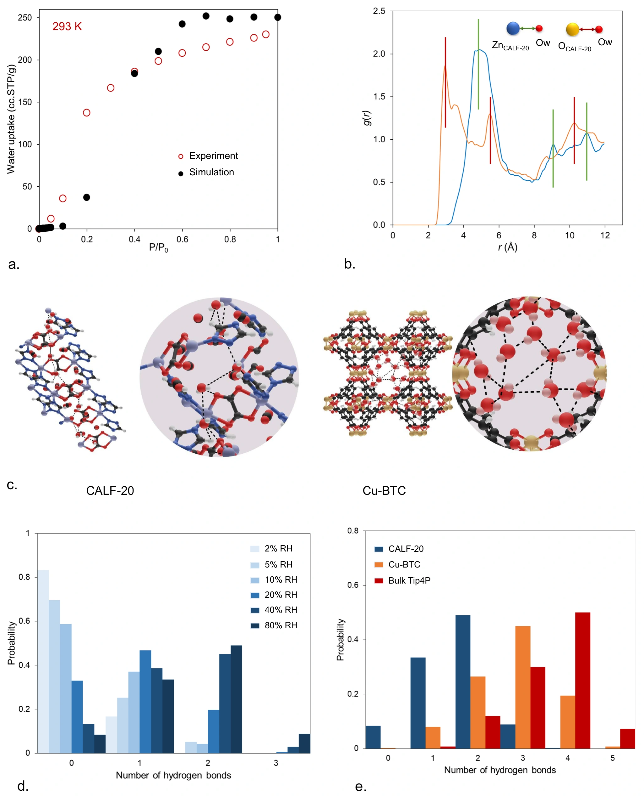

实验测到了什么，
模拟解释了什么？What did experiments measure?
What did simulations explain?
这篇论文把吸附实验、X 射线衍射和分子模拟放在一起，研究 CALF-20 吸附气体时是否改变结构，以及这种变化如何帮助解释吸附行为。下面逐项看：为什么选这个方法、具体怎么做、得到什么结果、结论能说到哪一步。This paper combines adsorption experiments, X-ray diffraction and molecular simulations to investigate structural changes during gas adsorption in CALF-20. Follow each method: why it is needed, what the authors do, what comes out, and which conclusion the result supports.
先看：什么支持什么 ↓Start with the evidence flow ↓
这是按问题组织的阅读顺序，不是实验时间线。论文说明计算先于 Svante 的合成与吸附测量；真实样品和计算模型提供不同种类的证据。This is a reading order organised by questions, not a laboratory timeline. The paper states that computations preceded synthesis and adsorption measurements at Svante. Samples and models provide different kinds of evidence.
什么结果，支持什么结论？Which result supports which claim?
沿每条证据链读：方法 → 结果 → 能支持的判断。实线表示获得结果或直接支持；虚线表示提出假设或综合解释。Follow each evidence path: method → result → supported claim. Solid lines indicate outputs or direct support; dashed lines indicate hypotheses or combined interpretation.
尚未证明原因Raises a hypothesis
Cause not established
真实样品Direct support
Real sample
the model
相对稳定性Predicts
relative stability
statistics
the model
不等于证明唯一机制Together support the authors’ interpretation
Do not establish a unique mechanism
图中箭头由本页整理，表示证据与结论的关系，不表示实验时间顺序。各节点可点击查看方法、原图和限制。依据正文 pp. 2–5、7–9，Fig. 2–6。Arrows are an editorial map of evidence and claims, not an experimental timeline. Select a node for its method, original figure and limits. Based on main pp. 2–5, 7–9 and Figs. 2–6. 证据记录 ↗Evidence ledger ↗
结构文件：计算从哪里开始？Structure file: where do the calculations start?
先区分真实样品和它在计算机中的结构表示。本文使用已有 CALF-20 结构，并比较计算与实验。Distinguish the physical sample from its representation in a computer. The study uses an existing CALF-20 structure and compares calculations with experiments.
- 为什么用Purpose
- 后续模拟需要一个明确的原子结构作为起点。The simulations need a defined atomic structure as their starting point.
- 怎么做Operation
- 读取已有论文公开的晶体结构文件（CIF）；计算孔隙几何，用 ToposPro 和 CrystalNets 简化、识别连接网络。Read the published crystallographic information file (CIF); calculate pore geometry and identify the simplified network using ToposPro and CrystalNets.
- 得到什么Output
- 最大空腔直径 LCD 约 4.3 Å；限孔直径 PLD 约 3 Å；网络类型为 dmc。它们描述这份结构模型的空间与连接关系。The largest cavity diameter (LCD) is about 4.3 Å, the pore limiting diameter (PLD) about 3 Å, and the network is dmc. These describe the geometry and connectivity of this structure model.
原文图 1a–b，视窗裁切，图内结构未改动。右侧拓扑图：红色为金属节点，绿色为有机节点，蓝线为连接分支。三唑连接体简化为三连接节点，草酸根简化为直通分支。Original Fig. 1a–b, viewport-cropped with the artwork unchanged. In the topology panel, red denotes metal nodes, green organic nodes, and blue linker branches. Triazolate is reduced to a three-connected node and oxalate to a straight-through branch. Oktavian et al., Fig. 1 · CC BY 4.0
这些数字从哪里来？Where do these numbers come from?
LCD 和 PLD 是根据原子坐标算出的几何量。BET 表面积则由 N₂ 吸附等温线按 BET 方法分析得到，不能把三者都叫作“直接测到的孔径”。LCD and PLD are geometric quantities calculated from atomic coordinates. BET area is obtained by analysing an N₂ adsorption isotherm with the BET method. These are not three directly measured pore diameters.
Zn 与 1,2,4-三唑根（C₂N₃）连接成层，草酸根（C₂O₄）跨层桥接。SingleNode 简化保留节点—连接体关系；dmc 是 RCSR 网络分类。Zn and 1,2,4-triazolate (C₂N₃) form layers bridged by oxalate (C₂O₄). SingleNode simplification retains node–linker relations; dmc is an RCSR network classification.
吸附实验与 GCMC：测量和预测是否一致？Adsorption and GCMC: do measurements match predictions?
同一个问题有两份答案：一份来自真实样品，一份来自固定骨架模型。比较的是同温度、同压力下的吸附量。Two answers to the same question: one from a real sample, the other from a rigid-framework model. Compare uptake at the same temperature and pressure.
- 为什么用Purpose
- 先检查：把骨架固定住，能否预测真实样品的吸附量？Check whether a fixed framework can predict uptake by the real sample.
- 实验怎么做Experiment
- 在固定温度下改变气体压力，测量平衡吸附量，得到吸附等温线。分别研究 N₂（77 K）和 CO₂（273–387 K）。Vary gas pressure at a fixed temperature and measure equilibrium uptake to obtain an adsorption isotherm. Study N₂ at 77 K and CO₂ across 273–387 K.
- 计算怎么做Calculation
- 固定骨架原子的坐标；GCMC 随机尝试插入、删除、平移和转动气体分子，按统计力学概率接受或拒绝，再统计平衡吸附量。Fix the framework atoms. Grand canonical Monte Carlo (GCMC) attempts molecule insertion, deletion, translation and rotation, accepts or rejects moves using statistical-mechanical probabilities, and averages equilibrium uptake.
- 得到什么Result
- N₂ 的实验与模拟吻合较好，支持样品结晶良好、已有效活化的判断。CO₂ 总体吻合，但约 150 mbar 以上、尤其 273 K 时，模拟偏低。N₂ measurements and simulations agree well, supporting crystallinity and effective sample activation. CO₂ agrees broadly, but the model underpredicts above about 150 mbar, especially at 273 K.

为什么不先归因于残留溶剂？Why not attribute the gap to residual solvent?
残留溶剂通常占据孔空间，使实验吸附量下降；无溶剂模型因而往往高估吸附。这里偏差方向相反，所以作者提出结构响应的解释。这是排查思路，不是排除了所有模型误差。Residual solvent usually occupies pore space and reduces experimental uptake, so a solvent-free model often overpredicts adsorption. Here the discrepancy has the opposite sign, motivating the authors’ structural hypothesis. This reasoning does not rule out every other model error.
研究层：N₂/CO₂ 使用 20,000 平衡 + 20,000 生产循环；水使用 100,000 + 100,000，模型精度与采样成本不同。Research layer: N₂/CO₂ use 20,000 equilibration + 20,000 production cycles; water uses 100,000 + 100,000, reflecting different sampling demands.
查看不同温度的论文代表值Explore representative uptake values at different temperatures
来源：正文 pp. 2–4、Fig. 2；GCMC 方法见 p. 8。Source: main pp. 2–4, Fig. 2; GCMC methods on p. 8.
Fig. 2 ↗PXRD：真实样品的结构变了吗？PXRD: did the real structure change?
先有“结构是否变化”的问题，再选择能反映晶面间距的测量。这里测的是衍射，不是吸附量。The question is whether structure changes. Diffraction probes plane spacings; it does not measure uptake.
- 为什么用Purpose
- 吸附量的偏差不能告诉我们骨架是否真的变了，需要独立的结构测量。An uptake discrepancy cannot establish whether the framework changed. An independent structural measurement is needed.
- 怎么做Operation
- 以干燥样品为参照，分别施加 CO₂、不同湿度或液水等条件，再记录粉末 X 射线衍射（PXRD）图谱。Use a dried sample as reference, expose samples to CO₂, different humidities or liquid water, and record powder X-ray diffraction (PXRD) patterns.
- 测什么Measurement
- 探测器记录不同角度的衍射强度，形成“2θ—强度”曲线。峰的位置与晶面间距有关；在同一波长下，高 2θ 对应较小间距，低 2θ 对应较大间距。The detector records intensity at different diffraction angles, giving an intensity-versus-2θ pattern. At a fixed wavelength, higher 2θ corresponds to smaller plane spacing and lower 2θ to larger spacing.
- 得到什么Result
- CO₂ 下 (100)、(020) 峰移动，(011) 基本不动；液水下三处都变化。4% 和 10% RH 变化较小，20% RH 出现明显变化。Under CO₂, (100) and (020) shift while (011) is nearly unchanged. Liquid water changes all three. Changes are small at 4% and 10% RH and clear at 20% RH.

逐个比较三个峰的移动方向Compare the three peak-shift directions
作者提出：CO₂ 所需的结构调整较少，而水需要更多调整，这可能帮助解释低 RH 下的 CO₂ 选择性。液水与 20% RH 的图谱不同，不能把液水方向套用到水蒸气。The authors propose that CO₂ needs less structural adjustment than water, which may help explain CO₂ selectivity at low RH. Liquid-water and 20% RH patterns differ, so their shift directions cannot be interchanged.
实验条件与原文记载差异Experimental conditions and a source discrepancy
干燥 N₂ 与 CO₂ 的图谱在 50 °C 测量。正文 p. 3 写 110 °C、N₂ 下干燥 45 min；Fig. 3 图注写 30 min。本页保留这一差异，不把它们合成一个确定时长。不同 RH 的图谱在 N₂ 气氛下采集。Dry-N₂ and CO₂ patterns were measured at 50 °C. Main p. 3 specifies drying at 110 °C under N₂ for 45 min, while the Fig. 3 caption states 30 min. Both are retained rather than combined into a definitive duration. Humidity-dependent patterns were collected under N₂.
既有 SI 记录：Rigaku Miniflex 600，CuKα；液体浸泡 1 h。更完整的实验与计算设置见来源记录。Previously checked SI record: Rigaku Miniflex 600, CuKα; 1 h liquid soaking. The source ledger contains additional experimental and computational settings.
来源：正文 pp. 3–4、Fig. 3。峰位给出结构信息，不能独立给出完整的原子运动轨迹。Source: main pp. 3–4, Fig. 3. Peak positions inform structure; they do not independently reveal complete atomic trajectories.
Fig. 3 ↗DFT-MD：允许骨架运动后，算出了什么？DFT-MD: what changes when the framework can move?
从固定坐标转向运动轨迹。这一步比较空骨架与加载骨架，考察分子存在时的结构响应。Move from fixed coordinates to trajectories. Compare empty and loaded models to examine the structural response to adsorbed molecules.
- 为什么用Purpose
- PXRD 显示结构变化，但不能单独说明原子怎样运动、孔内可达空间怎样改变。PXRD shows structural change but cannot by itself explain atomic motion or changes in accessible pore space.
- 怎么做Operation
- 分别建立空骨架和加载 CO₂ 的模型。DFT 计算能量和力，分子动力学推进原子运动；NPT 设置控制温度、压力，同时允许晶胞形状和体积变化。Set up empty and CO₂-loaded models. DFT supplies energies and forces, and molecular dynamics advances atomic motion. NPT controls temperature and pressure while allowing the cell shape and volume to change.
- 算什么Calculation
- 从轨迹统计晶胞边长、体积及孔径分布，再用 N₂ 探针计算可达孔体积分数：探针可达体积 ÷ 总体积。Collect distributions of cell lengths, volumes and pore sizes from the trajectories. An N₂ probe estimates accessible pore-volume fraction: probe-accessible volume divided by total volume.
- 得到什么Result
- 273 K 下，空／加载模型的超胞体积约为 5930／6089 ų，增加约 2.7%；加载后部分形变波动减小，可达孔隙增加。At 273 K, empty/loaded supercell volumes are about 5930/6089 ų, an increase of about 2.7%. Loading reduces some structural fluctuations and increases accessible pore space.

比较三个温度的孔体积分数差Compare pore-fraction differences at three temperatures
273 K：两种几何计算量273 K: two different geometric quantities
空骨架empty
客体加载guest-loaded
超胞体积supercell volume
同一温度下，N₂ 探针可达孔体积分数差为 11.9%。这就是为什么“晶胞只变了 2.7%”不能被读成“吸附空间只变了 2.7%”。At the same temperature, the N₂-probe-accessible pore-volume fraction differs by 11.9%. A 2.7% cell-volume change therefore cannot be read as only a 2.7% change in adsorption space.
来源：正文 p. 4、Fig. 4；NPT、2×2×2 超胞、273/323/387 K、20 ps、1 fs。Source: main p. 4 and Fig. 4; NPT, 2×2×2 supercell, 273/323/387 K, 20 ps, 1 fs.
孔体积分数是探针依赖的几何计算量；图中 11.9%、7.3%、6.6% 沿用作者报告的差值，不能当作实测吸附量的增加比例。Pore fraction is a probe-dependent geometric calculation. The reported differences of 11.9%, 7.3% and 6.6% are not measured percentage increases in uptake.
来源：正文 p. 4、Fig. 4、Methods；CP2K，PBE-D3(BJ)，2×2×2 超胞，273/323/387 K，20 ps，1 fs 步长。Source: main p. 4, Fig. 4, Methods; CP2K, PBE-D3(BJ), 2×2×2 supercell, 273/323/387 K, 20 ps, 1 fs timestep.
Fig. 4 ↗MLP 与增强采样：哪种结构更稳定？MLP and enhanced sampling: which structures are favoured?
结构曾在轨迹里出现，不等于它最稳定。自由能计算比较不同体积状态的相对稳定性。A structure appearing in a trajectory does not make it the most stable. Free-energy calculations compare the relative stability of volume states.
- 为什么用Purpose
- 20 ps 的普通轨迹只能访问有限状态。要比较不同体积的稳定性，需要更广泛采样并计算自由能。An ordinary 20 ps trajectory visits a limited set of states. Comparing stability across volumes requires wider sampling and free-energy calculations.
- 怎么做Operation
- 先用 DFT 生成不同体积结构的能量和力，再训练机器学习势（MLP）近似这些量，让更充分的采样在可承受的成本内完成。Generate DFT energies and forces for structures at different volumes. Train machine learning potentials (MLPs) to approximate these quantities, making more extensive sampling affordable.
- 算什么Calculation
- 用伞形采样分别覆盖不同体积，WHAM 去除人为采样偏置，得到自由能随体积的曲线；曲线低谷给出所考察条件下偏好的体积。Use umbrella sampling to cover different volumes. WHAM removes the imposed sampling bias to reconstruct free energy versus volume; minima identify preferred volumes under the modelled conditions.
- 得到什么Result
- 273 K 下，CO₂ 加载可把平衡单晶胞体积从约 744 推至 766 ų。水的作用不单调：中等加载量下约 725 ų，最高研究加载量下约 764 ų。At 273 K, CO₂ loading can shift equilibrium unit-cell volume from about 744 to 766 ų. Water is non-monotonic: about 725 ų at intermediate loading and 764 ų at the highest studied loading.
这四步怎样接起来？How do the four computational steps connect?
点击步骤查看输入、操作和输出。训练得到的是计算能量与力的工具；最终要回答的是结构稳定性。Select a step to inspect its input, operation and output. Training produces a tool for energies and forces; the scientific question concerns structural stability.
对照原文自由能曲线与配体转角分析Inspect the original free-energy curves and linker-angle analysis

进一步的模拟转角分析：空骨架分布峰约 10–20°，CO₂ 加载约 20–30°，水加载约 30–40°。作者据此提出水偏好更大配体转动的解释；这些角度同样来自计算。Further simulated linker-angle distributions peak around 10–20° for empty, 20–30° for CO₂-loaded and 30–40° for water-loaded frameworks. The authors use this to suggest that water favours greater linker rotation. These angles are also calculated.
来源：正文 pp. 5–6、Fig. 5；配体转角见 p. 5 与 SI Fig. 2；采样和训练见 Methods p. 9。Source: main pp. 5–6, Fig. 5; linker angles on p. 5 and SI Fig. 2; sampling and training in Methods p. 9.
Fig. 5 ↗水吸附：测吸水量，算分子分布Water adsorption: measure uptake, calculate distributions
水的吸附量和水的微观排列是两个问题。实验与计算分别提供答案，再检查它们是否相容。Water uptake and microscopic arrangement are different questions. Measurements and calculations provide complementary answers.
- 为什么用Purpose
- 吸水量随湿度变化的曲线不直接告诉我们水在哪里、是否形成氢键网络，需要额外的微观分析。Uptake versus humidity does not directly reveal where water sits or whether it forms a hydrogen-bond network. Microscopic analysis is needed.
- 实验怎么做Experiment
- 293 K 下改变相对湿度 RH，测量平衡水吸附量。RH 表示水蒸气压力相对该温度饱和蒸气压的百分比。At 293 K, vary relative humidity (RH) and measure equilibrium water uptake. RH is water vapour pressure as a percentage of saturation pressure at that temperature.
- 计算怎么做Calculation
- 用水吸附模拟预测同类曲线；从采样结构统计原子距离分布（RDF）和每个水分子的氢键数，并分析水—骨架、水—水相互作用能。Predict an isotherm using water-adsorption simulations. From sampled configurations, calculate radial distribution functions (RDFs), hydrogen bonds per water molecule and water–framework/water–water interaction energies.
- 得到什么Result
- 实验与模拟均显示 V 型水等温线。模拟 RDF 在水 O—草酸 O 约 2.8 Å 处出现首峰；80% RH 下，水分子主要形成 1–2 条氢键。Both measurements and simulations show a type-V water isotherm. The simulated water-O/oxalate-O RDF has its first peak around 2.8 Å; at 80% RH, water molecules predominantly form 1–2 hydrogen bonds.
柱形图不是实验数出的氢键These bonds are counted in simulations
横向的 0–4 是每个水分子的氢键条数，柱上百分比是该类别的概率。换湿度，比较水分子从“没有邻居可成键”到“形成更多氢键”的分布变化。The categories 0–4 are hydrogen bonds per water molecule; percentages give the probability of each category. Change humidity to compare the distribution as more hydrogen bonds form.
这里按距离和角度规则计数：O–O < 3.5 Å，同时 O–H···O > 150°。判据满足才计为氢键，并非仪器直接拍到了每一条键。A pair is counted as hydrogen-bonded when O–O < 3.5 Å and O–H···O > 150°. These are geometric counting criteria, not direct images of individual bonds.
模拟还显示：水更靠近草酸氧，与 Zn 缺少直接接触；水—框架相互作用能中约 73% 来自静电项。这是模型能量分解，不是独立的量热测量。Simulations also place water near oxalate oxygen without direct Zn contact. About 73% of water–framework interaction energy is electrostatic in the model; this is an energy decomposition, not an independent calorimetric measurement.
对照原文 Fig. 6：哪一幅含实验，哪一幅是计算？Inspect Fig. 6: which panels contain experiments?

Cu-BTC 在 80% RH 下的主要氢键数高于 CALF-20，体相 TIP4P 液水主要为 4 条。作者将 CALF-20 较少的氢键与小孔限制、水的分散及缺少直接 Zn 接触联系起来。Cu-BTC at 80% RH has a higher dominant bond count than CALF-20; bulk TIP4P liquid water mainly has 4. The authors associate the lower counts in CALF-20 with confinement, dispersed water and lack of direct Zn contact.
来源：正文 pp. 5、7–8、Fig. 6；能量分解见 SI Fig. 3。交互概率保留已核对的 XLSX Figure 6d 数据。Source: main pp. 5, 7–8, Fig. 6; energy decomposition in SI Fig. 3. Interactive probabilities retain the verified XLSX Figure 6d values.
Fig. 6 ↗哪些结论已经有证据，哪些仍是解释？Which claims are supported, and which remain interpretations?
“证明了什么”必须对应一句具体的结论。实验和模拟能相互支持，但不能互换身份。Ask what specific claim is supported. Experiments and simulations can reinforce each other, but their evidential roles differ.
样品吸附量随温度、压力／湿度变化；PXRD 图谱随吸附条件变化。这是对真实样品获得的证据。Uptake changes with temperature, pressure/humidity; PXRD patterns change with adsorption conditions. These are measurements on real samples.
加载改变结构分布与可达孔空间；自由能比较结构稳定性；RDF 和氢键统计解释水在孔内的行为。结论受模型与采样条件限制。Loading changes structural distributions and accessible space; free energies compare stability; RDF and hydrogen-bond statistics describe confined water. Conclusions depend on models and sampling.
CO₂ 与水所需的结构调整不同，水的氢键网络又受限，这些因素可能帮助解释低 RH 下的选择性。本文这些证据没有证明“柔性是唯一原因”。Different structural adjustments for CO₂ and water, together with restricted water hydrogen bonding, may help explain low-RH selectivity. These results do not establish flexibility as its only cause.
再核对两条不能混淆的边界Two further distinctions
单组分吸附量不能直接当作混合气体选择性；论文开篇的已有分离性能来自所引先前研究。液水浸泡也不能代表每一种湿度下的水蒸气吸附状态。Single-component uptake is not itself mixture selectivity; the established separation performance cited in the introduction comes from prior work. Liquid-water soaking also cannot represent every vapour-humidity state.
MLP 训练误差：能量 0.13 meV/atom、力 28.3 meV/Å；Methods 报告验证误差低于 0.13 meV/atom 与 39.6 meV/Å。训练、验证误差与实验吻合是不同检查。MLP training errors are 0.13 meV/atom for energy and 28.3 meV/Å for forces; Methods reports validation errors below 0.13 meV/atom and 39.6 meV/Å. Training, validation and experimental agreement are distinct checks.
方法与数据源清单Methods and data sources
GCMC：RASPA-2.0，TraPPE（N₂/CO₂），TIP4P（水），Dreiding 框架参数，12.8 Å LJ 截断，Ewald；DFT-MD：CP2K、PBE-D3(BJ)、NPT；MLP：NequIP、90:10 训练/验证、WHAM 自由能。GCMC: RASPA-2.0, TraPPE (N₂/CO₂), TIP4P (water), Dreiding framework parameters, 12.8 Å LJ cutoff and Ewald; DFT-MD: CP2K, PBE-D3(BJ), NPT; MLP: NequIP, 90:10 train/validation split and WHAM free energy.
阅读自检：看到“5930→6089 ų”时，能否说出它来自哪个方法、比较什么模型、为什么不能叫作 PXRD 直接测量值？Reading check: for “5930→6089 ų”, can you identify the method, the two models being compared, and why these are not direct PXRD measurements?
来源：正文 pp. 1–2、4–5、8–9；以上证据层次是本页的阅读整理。Source: main pp. 1–2, 4–5, 8–9; the evidence categories are this explainer’s reading guide.